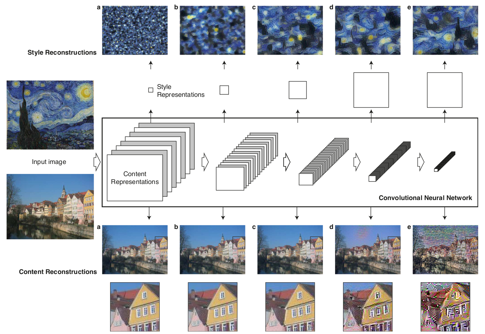
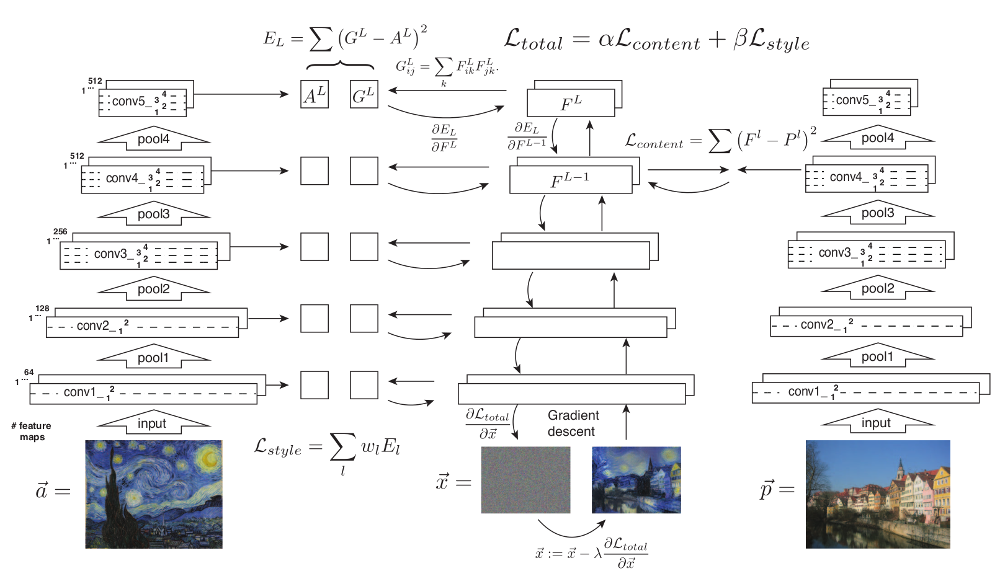
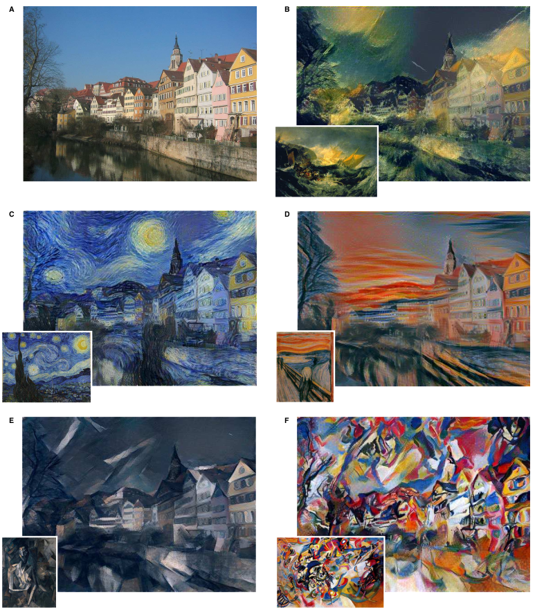
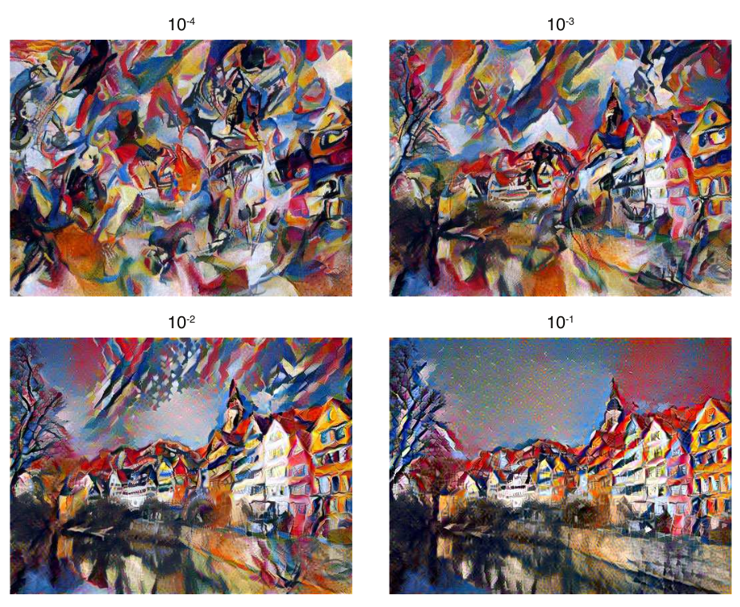
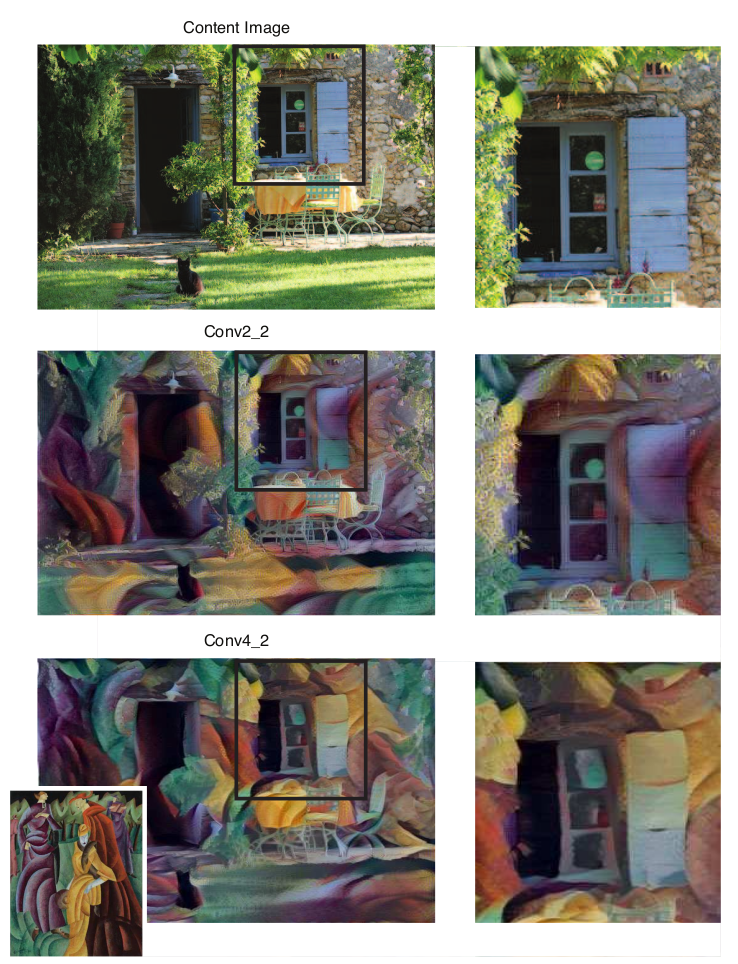
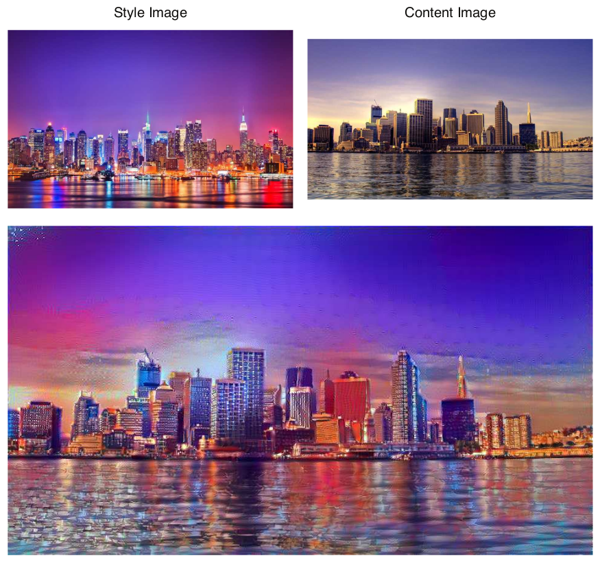

Image Style Transfer Using Convoluational Neural Networks
目录
论文: Image Style Transfer Using Convolutional Neural Networks
将图像的语义内容用不同的风格展示出来一直是较为困难的.主要是原因是以前的方法无法显示的区分图像中的语义内容和风格.本文采用以目标识别优化的卷积神经网络作为图片内容的高级图像信息提取器,并且介绍一种基于神经神经算法的艺术风格算法,能够将图像风格和图像内容分开并重新组合.该方法允许我们通过将任意图像和可见的集中艺术风格相结合,从而产生高质量的图像.实验结果探讨了深度卷积网络学习的图像表征和这些图像表征能够支持一些图像编辑和组合.
Introduction
图像风格转换可以认为图像的纹理(texture)转换.纹理转换可以认为是从原始图像中合成纹理信息,并且通过引入纹理合成(texture synthesis)上的限制,从而保留目标图像语义内容.存在非常的多的无参算法,可以通过从一些原纹理中采样一些像素,然后构造出真实图像.
虽然这些方法结果都非常惊艳,但是都有一个共同的限制:只使用了目标图像的低级图像特征.理想情况,风格转换应该可以从目标图像中抽取语义内容(目标和场景),然后使用原始图像的风格对这些语义内容信息进行纹理转换.因此,一个先决条件是可以从图中独立的分离出图像语义内容和图像风格.
一般情况下,将图像语义内容和图像风格分离仍然是一个非常困难的问题.但是最近几年,深度卷积神经网络的发展,提供了非常强大的能力,从而可以提取出图像高阶的语义内容信息.并且显示了,卷积神经网络只要拥有足够的标记数据集,那么学习得到的高阶图像内容抽取器,在其他的视觉问题和其他的数据集上具有良好的泛化能力.
本文显示了卷积神经网络学习高的高阶特征表示可以分别用于针对图像内容和图像风格的提取和处理.介绍了一个艺术特征的神经网络算法(A Neural Algorithm of Artistic Style)用于实现图像风格转换.本质上讲,该方法通过从卷积神经网络学习到的特征表示引入纹理合成限制实现纹理转换.既然,纹理模型也是基于深度图像表示,那么风格转换非常优雅的归结成单个神经网络的优化问题.图像生成是由在样本图像中执行基于特征表达的逐图搜索实现的.这种一般方法在很多的纹理合成中使用1, 2, 3,并且也可以用于深度图像表示的理解4, 5.实际上,本文提出的方法结合了参数化纹理卷积神经网络模型1和图像特征表示逆方法4.
Deep image representations
本文采用的 VGG6网络作为骨干的卷积神经网络,该网络是用来作目标识别和目标定位.基于由 16 层卷积层和 5 层 pooling 层组成 VGG-19 生成的特征空间.通过缩放权值来对整个网络进行归一化(normalized),从而使得每个卷积层的输出的激活值均值为 1,由于 VGG 网络中激活函数都是 ReLU 所以并不会影响整个网络的输出.并且通过实验发现,网络中采取均值采样的图像风格转换结果要好于采用最大值采样.
Content representation
通常讲,网络中每一层的非线性卷积核组的数量会随着网络的加深而增大.假设输入图像为 \(\vec x\) ,图像被卷积神经网络的每一层卷积层编码.第 \(l\) 层卷积层具有 \(N_{l}\) 不同的卷积核,那么就会产生 \(N_{l}\) 个特征图,每个特征图具有 \(M_{l}\) 大小, \(M_{l}\) 为特征图的高乘以宽.那么 \(l\) 层的的相应矩阵为 \(F^{l} \in \mathcal{R}^{N_{l} \times M_{l}}\) ,那么 \(F_{ij}^{l}\) 为 \(l\) 层卷积层的 \(i^{th}\) 卷积核在 \(j\) 位置的激活值.
那么可以通过在一个充满白噪声图像(white noise)上执行梯度下降方法从而构造一张图,使得该图在每一层上的相应值和原图一致(如figure-1所示,内容重构 /content reconstructions/4).设 \(\vec p\) 和 \(\vec x\) 分别为原始图像和重构的图像, \(P^{l}\) 和 \(F^{l}\) 为 \(l\) 层的特征表示.由两个特征表示构成方差损失:
\begin{equation} \mathcal{L}_{content}(\vec p,\vec x,l) = \frac{1}{2}\sum_{i,j}\left (F_{ij}^{l} - P_{ij}^{l} \right)^2 \end{equation}那么对 \(l\) 层激活值进行求导:
\begin{equation} \frac{\partial \mathcal{L}_{content}}{\partial F_{ij}^{l}} = \begin{cases} \left( F^{l} - P^{l} \right)_{ij} \: \: & if\, F_{ij}^{l} > 0 \\ 0 \: \: & if\, F_{ij}^{l} < 0, \end{cases} \end{equation}可以通过常规的反向传播算法计算针对重构图像 \(\vec x\) 的梯度值(如figure-2右边).那么就可以通过修改随机初始化的图像 \(\vec x\) 直到最终的图像和原始图像 \(\vec p\) 在任意卷积层都具有相同的激活值.
当卷积神经网络以目标识别来优化,整个网络会学习到的图像表达使得目标信息随着网路深度显示增加1.因此,随着网络深度的加深,图像生成的对应特征矩阵会携带越多的图像中包含的目标信息,可以用来作为图像内容表达.高层特征矩阵对于目标识别更敏感,携带更多图像的高维内容,但是对原始的像素分布却没有很强的限制(figure-1 d,e).相反如果从低层特征矩阵重构,那么就只会产生和原始图像类似的像素值(figure-1 a-c).

图1 卷积神经网络图像表示能力.对于一个输入图像,卷积神经网络通过一系列卷积核操作生成不同尺度的表示. 内容重构 可以认为是采用卷积神经网络不同层的表示进行重构.分别采用 VGG 网络卷积层(a) conv1_2,(b) conv2_2,(c) conv3_2,(d) conv4_2 和 (e) conv5_2.可以发现采用底层(a-c)的网络层进行重构效果较好.越高层网络对像素细节信息丢失的越严重(d,e). 风格重构.在原始的卷积层激活值上构建了特征空间,用来抽取图像的风格特征.通过计算不同网络层的不同特征图之间的协同信息来表示风格.这里采用了不同网络层来进行风格重构(a) conv1_1,(b) conv1_1, conv2_1,(c) conv1_1, conv2_1, conv3_1,(d) conv1_1, conv2_1, conv3_1, conv4_1, (e) conv1_1, conv2_1, conv3_1, conv4_1, conv5_1.重构的图像随着尺度的增加更好地和风格图像匹配,但是忽略了全局分布信息.
Style representation
采用获取图像纹理信息的网络获取输入图像的风格表示1.特征空间可以是任意一层网络层产生的激活矩阵,由不同激活矩阵的协同矩阵组成.特征协同定义为 Gram 矩阵 \(G^{l} \in \mathcal{R}^{N_{l}\times N_{l}}\) , \(G_{ij}^{l}\) 为第 \(l\) 层的网络层特征矩阵之间的内积:
\begin{equation} G_{ij}^{l} = \sum_{k}F_{ik}^{l}F_{jk}^{l}. \end{equation}通过使用多层的特征协同,可以获得输入图像固定(stationary),多尺度表达,该表达能够捕获输入图像的纹理信息.同样的,可以通过限制重构图像必须满足多尺度纹理信息约束,从而实现这些纹理信息可视化(如figure-1风格重构所示).通过在白噪声图像上采取最小化 Gram 矩阵方差的方法重构图像.
设 \(\vec a\) 和 \(\vec x\) 分别为原始图像和重构图像, \(A^l\) 和 \(G^l\) 分别为第 \(l\) 层的风格表达.那么 \(l\) 层的风格损失为:
\begin{equation} E_{l} = \frac{1}{4N_{l}^{2}M_{l}^{2}}\sum_{i,j}\left( G_{ij}^{l}-A_{ij}^{l}\right)^2 \end{equation}那么风格损失函数:
\begin{equation} \mathcal{L}_{style}(\vec{a},\vec{x})=\sum_{l=0}^{L}w_{l}E_{l} \end{equation}其中: \(w_{l}\) 为网络层对风格损失函数的权重. \(E_{l}\) 对网络层 \(l\) 激活值的导数为:
\begin{equation} \frac{\partial E_{l}}{\partial F_{ij}^{l}} = \begin{cases} \frac{1}{N_{l}^{2}M_{l}^{2}}\left((F^{l})^{T}(G^{l}-A^{l}) \right)_{ji}\: \: & if\, F_{ij}^{l} > 0 \\ 0 \: \: & if\, F_{ij}^{l}<0. \end{cases} \end{equation}\(E_{l}\) 对输入的像素值 \(\vec x\) 的导数可以直接采用反向传播计算(如figure-2左图所示).
Style transfer
为了将艺术网络 \(\mathcal{a}\) 的风格应用到图像 \(\vec{p}\) 上,需要合成一个图像同时与图像 \(\vec{p}\) 的内容表达和风格 \(\vec{a}\) 一致(如figure-2所示).所示需要联合最小化一层的内容损失和多层的风格损失,最小的损失函数为:
\begin{equation} \mathcal{L}_{total}(\vec{p},\vec{a},\vec{x}) = \alpha\mathcal{L}_{content}(\vec{p},\vec{x}) + \beta\mathcal{L}_{style}(\vec{a},\vec{x}) \end{equation}其中: \(\alpha\) 和 \(\beta\) 分别为内容和风格对损失的权重.损失函数对输入像素的导数 \(\frac{\partial{\mathcal{L}_{total}}}{\partial{\vec{x}}}\) 可以采用任何的优化算法.本文通过实验发现 L-BFGS7 在图像风格转化中变现最好.为了使得风格图像的损失和内容图像的损失可比,需要将风格图像缩放到和内容图像相同分辨率.最终可以注意到,本文的方法并没有对合成结果进行正则化4.从低层网络抽取的纹理特征可以作为风格图像的先验.

图2 风格转换算法(Style transfer algorithm).首先抽取和保存内容和风格特征.风格图像 \(\vec{a}\) 输入网络,所有层的风格表示 \(A^l\) 计算和保存下来(左图).内容图像 \(\vec{p}\) 未输入网络,内容表示 \(P^l\) 也被计算和保存下来(右图).然后一个随机白噪声初始化的图像 \(\vec{x}\) 输入到网络中,并且计算出对应的风格特征 \(G^l\) 和内容特征 \(F^l\) .在 \(G^l\) 和 \(A^l\) 之间执行风格特征的每层执行逐元素的方差错误计算,记录为风格损失 \(\mathcal{L}_{style}\) (左边).同样,在 \(F^l\) 和 \(P^l\) 之间计算内容损失 \(\mathcal{L}_{content}\) (右边).最终,总损失 \(\mathcal{L}_{total}\) 将内容损失和风格损失通过线性参数组合在一起.然后采用标准向后传播算法计算损失对输入图像的元素梯度(中间).该梯度用于迭代更新输入图像 \(\vec{x}\) 直到图像和风格图像 \(\vec{a}\) 的风格特征与内容图像 \(\vec{p}\) 的内容特征同时匹配(中间下图).
Results
本文的关键发现是卷积神经网络可以很好的将风格表示和内容表示分离开.意味着,我们可以通过分别操控两种表达生成新的,具有意义的图像.为了说明这种发现,本文将两种不同来源的图像分别作为内容表示和风格表示(如figure-3所示).3 中内容图像采用的是 conv4_2 网络层,风格表示采用的是 conv1_1, cov2_1, conv3_1, conv4_1 和 conv5_1 (这些层的权重为 \(w_{l}=1/5\) ,其他层的权重为 0 ). \(\alpha / \beta\) 的比值分别为 1e-3(figure-3 B), 8e-4(figure-3 C),5e-3(figure-3 D) 和 5e-4(figure-3 E,F).

图3 一个图像和不同风格的艺术图像进行结合的结果.
Trade-off between content and style matching
可以看到的是,图像内容和风格是无法完全分解开.当采用一个图像内容和另外一张图像风格来生成图像时,生成的图像是无法同时完美的符合两个约束的.既然最小化的损失函数是将内容损失和风格损失线性叠加的,那么可以通过平滑调整两个损失函数之间的的比值来控制内容重构和风格重构的作用(4).如果增强风格重构,那么可以看到重构后的图像和风格图像更为相似,内容重构基本无法可视(\(\alpha / \beta = 1e^{-4}\),4左上图).当增强内容重构时,可以明显看到内容,但是风格匹配就不是特别好(\(\alpha / \beta = 1e^{-1}\),4右下图).所以,对于任意一对图像,可以权衡内容重构和风格重构的比值来获取不同的生成图像.

图4 不同内容和风格权重之间的关系. \(\alpha / \beta\) 从左上图到右下图开始增长.
Effect of different layers of the Convolutional Neural Network
影响图像合成过程中另外一个重要的因素是采取哪些网络层来执行图像内容和风格作为表达.如上所述,风格表达采用多层网络层来表示多尺度风格表达.这些网络层的深度和位置代表了局部尺度的风格匹配,可以合成不同的视觉表现(1 风格重构).而且越高层风格表达会致使合成的图像保留越大尺度的局部图像纹理结构,合成的图像从视觉上来看更为平滑和和谐.因此越高层风格表达合成的图像越容易让人接受.所以本文采用 conv1_1, conv2_1, con3_1, conv4_1 和 conv5_1 作为风格表达.
为了分析不同网络层的特征作为图像内容表达的效果,采取固定的风格网络和参数配置(\(\alpha / \beta = 1e^{-3}\)),一个用卷积层 conv2_2 作为内容表达,另外一个例子采取 conv4_2 作为内容表达(5).从结果上可以看到采用低层内容表达,合成图像展示和原图在像素细节上更为匹配,风格只是简单的覆盖上图像上(5,中间部分).相反,当采用高层内容表达,像素细节上的限制并不是非常强,风格表达和图像内容融合的较好.可以看到图像内容具有较好的结构,风格和内容都能够表现的较好(5下图).

图5 采用不同网络层作为内容表达的效果.采用卷积层 conv2_2 保护了原图更好的图像结构,并且合成的图像看起来风格纹理只是简单的覆盖在图像上(中间图所示).采用卷积层 conv4_2, 风格和内容很好的融合在一起(下图).
Initialisation of gradient descent
Photorealistic style transfer
本文采取的都是艺术风格转换.本文描述的算法可以采用任意图像作为风格图像.例如:可以将纽约的夜晚图像风格和伦敦白天图像进行融合(7).可以看到真实图像的风格没有完全保存下来,合成的图像将风格图像的颜色和光照情况融合在一起,使得伦敦图像有一定程度的像晚上.

图7 真实图像风格转换.风格由夜晚纽约图像转换到白天的伦敦图像.该图合成以内容图像初始化,并且比例为 \(\alpha / \beta\) 为 1e-2.
Discussion
本文说明了如何采用卷积神经网络生成的特征表示,将不同网络的风格迁移到其他任意图像上去.虽然整个算法仍然具有一定的局限性,但是结果上可以产生高质量图像.
最主要的限制是合成图像的分辨率.优化问题的规模和卷积神经网络的神经元数量都随着图像分辨率的增大而线性增大.因此,合成过程的速度非常依赖图像的分辨率.论文中展示的所有合成图像的分辨率为 512*512 像素,整个合成过程在 Nvidia K40 GPU 上需要消耗 1 个小时(依赖于实际的图像大小和梯度下降停止的条件).当前的性能无法在线上使用.
另外一个问题是合成图像会因为图像中的噪声失败.这种情况在艺术风格转换下影响不大,但是当内容图像和风格图像都是真实图像的时候会比较严重.然后,噪声在图像中的变现非常具有特点.所以有可能构造一个有效的去躁技术,用于后处理.
图像艺术风格化是计算机图形学中较为传统的研究领域.常规方法和本文方法具有较大差别,采用特殊定制方法使得所有图像具有一种艺术风格.最近的回顾论文可以参考 State of the "Art": A Taxonomy of Artistic Stylization Techniques for Images and Video.
将图像内容和图像风格分离开并不是一个必要的问题.主要原因是无法准确的定义图像风格.因为图像风格可能由调色,形状等等因素定义.本文只是认为生成的图像只要能够保持主要的目标对象和场景,并且同时看起来和风格图像较为相似即可.这种评估方法即不具有数学上的准确,并且也无法得到普遍认可.
尽管如此,可以看到神经网络可以用来执行视觉上一些核心任务是非常令人兴奋的:自动学习图像表示,至少一定程度上可以将图像内容从图像风格中抽离出来.一种解释是当学习图像识别,网络可以很好的应对图像中的一些变化,并保持目标的确定性.图像内容的可变性因素和外形的可变性因素可能是解决这一类问题的关键.虽然优化后的神经网络和生物视觉具有一定的相似性,但是人类具有创造和艺术感是现在神经网络所并不具备的,也可以认为是我们视觉系统具有强大推理能力.
脚注:
Texture Synthesis Using Convolutional Neural Networks
Pyramid-based Texture Analysis/Synthesis
A Parametric Texture Model Based on Joint Statistics of Complex Wavelet Coefficients
Understanding Deep Image Representations by Inverting Them
Deep Inside Convolutional Networks: Visualising Image Classification Models and Saliency Maps
Very Deep Convolutional Networks for Large-Scale Image Recognition.
L-BFGS-B: Fortran subroutines for large-scale bound constrained optimization